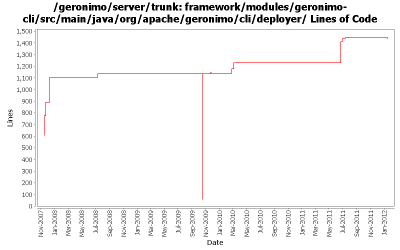

[root]/framework/modules/geronimo-cli/src/main/java/org/apache/geronimo/cli/deployer

| Author | Changes | Lines of Code | Lines per Change |
|---|---|---|---|
| Totals | 85 (100.0%) | 2385 (100.0%) | 28.0 |
| djencks | 31 (36.5%) | 1246 (52.2%) | 40.1 |
| genspring | 5 (5.9%) | 410 (17.2%) | 82.0 |
| gawor | 27 (31.8%) | 321 (13.5%) | 11.8 |
| rwonly | 17 (20.0%) | 245 (10.3%) | 14.4 |
| vamsic007 | 3 (3.5%) | 114 (4.8%) | 38.0 |
| xuhaihong | 2 (2.4%) | 49 (2.1%) | 24.5 |
GERONIMO-6240 remove/clean up some unused startup code
0 lines of code changed in 1 file:
GERONIMO-5764 some improvements of bundle recorder:
(1) use the logic in pluginInstallerGBean when install bundle, so that the Artifact could be calculated the same way, and also can convert a normal jar if the file is not an OSGi bundle.
(2) when delete an item in startup.properties, also delete the odd empty lines.
5 lines of code changed in 1 file:
the help info of uninstall-bundle cli can not display
9 lines of code changed in 2 files:
GERONIMO-5764 record the bundles in startup.properties and add "deploy uninstall-bundle" cli
49 lines of code changed in 5 files:
GERONIMO-5764 fix the cyclic reference and add ASF license header
48 lines of code changed in 3 files:
GERONIMO-5764 Support Bundles Deployment
131 lines of code changed in 4 files:
GERONIMO-5793 make config properties overridable
1 lines of code changed in 1 file:
GERONIMO-5793 OSGI Bundle "Stop" doesn't work according to Hot deployed "HelloWorld" osgi bundle sample
2 lines of code changed in 1 file:
GERONIMO-5527: Improved server -clean option handling
2 lines of code changed in 1 file:
GERONIMO-5421: GoGo command for unlock-keystore plus other related fixes and improvements. Initial patch from Chi Runhua
1 lines of code changed in 1 file:
GERONIMO-5303 Improve metadata of encrypt command, patch from Jeff
7 lines of code changed in 1 file:
cleanup framework startup code
1 lines of code changed in 1 file:
GERONIMO-5027 Redeploy option for farming. Based on patch from Ashish.
0 lines of code changed in 2 files:
GERONIMO-5156 Command line utility to unlock a keystore and private key (Based the patch provided by Ashish Jain)
49 lines of code changed in 2 files:
https://issues.apache.org/jira/browse/GERONIMO-3003, port #896316 from 22 branch to trunk.
403 lines of code changed in 2 files:
1) register geronimo-managed mbean server as osgi service, 2) enable osgi jmx bundle to expose rfc139 mbeans, 3) add/update the shutdown command to use rfc139 mbean to stop the container, 4) update the debug properties for jdb to use geronimo defaults
1 lines of code changed in 2 files:
get basic deploy command line tool working. some operations like list-modules or list-targets seem to work
13 lines of code changed in 1 file:
add bin/geronimo and bin/client that work just like before. bin/karaf will only start the karaf framework
0 lines of code changed in 2 files:
GERONIMO-4916 step 2 move sandbox osgi framework into trunk
1079 lines of code changed in 13 files:
GERONIMO-4916 step 1 remove old framwork
0 lines of code changed in 13 files:
fix option name collision in deployer (GERONIMO-4285)
1 lines of code changed in 1 file:
enable deployer and gshell commands to communicate with jmx server over ssl/tls (part of GERONIMO-3876)
33 lines of code changed in 3 files:
gshell commands for install-library, deploy, distribute, and redeploy commands
173 lines of code changed in 10 files:
gshell commands for list-targets and list-modules
96 lines of code changed in 5 files:
GERONIMO-3611 Deployer should provide an "install-library" option to upload jars to repository
o Deployer util now supports an "install-library" option.
o Added an installLibrary method to PluginInstaller.
o Thanks to David Jencks for his suggestion.
114 lines of code changed in 3 files:
GERONIMO-3605 preliminary work to get deployment gshell commands. list-plugins works but needs formatting
167 lines of code changed in 4 files: